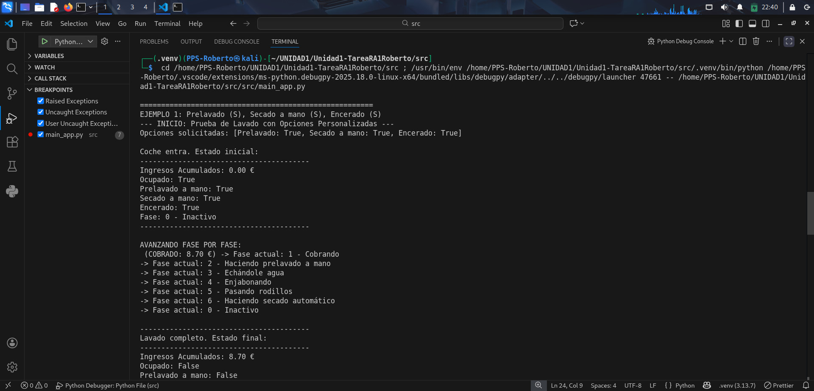
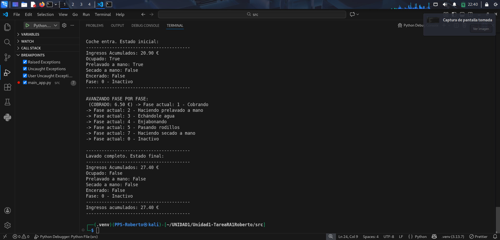

Ejecución y Depuración
En este apartado se documentan los problemas detectados durante la ejecución y pruebas de la aplicación Lavadero, así como las soluciones aplicadas.

1. Error en la llamada a la simulación del lavado
Problema detectado:
Al no indicar en el ejemplo 4 el parámetro encerado, Python lo tomaba por defecto como True, lo que provocaba errores posteriores en la lógica de negocio.
Solución aplicada:
Se añadió explícitamente el parámetro encerado=False para que la simulación refleje correctamente las opciones deseadas:
ejecutarSimulacion(lavadero_global, prelavado=True, secado_mano=False, encerado=False)
2. Regla de negocio del encerado
Problema detectado:
En Lavadero.hacerLavado existía esta validación:
if not secado_a_mano and encerado:
raise ValueError("No se puede encerar el coche sin secado a mano")
Si se solicitaba encerado sin secado a mano, el programa lanzaba un error y detenía la ejecución.
Solución aplicada:
Se modificó para activar automáticamente el secado a mano cuando se solicita encerado:
if encerado and not secado_a_mano:
secado_a_mano = True
print("AVISO: Se ha activado secado a mano automáticamente porque se solicitó encerado.")
3. Capturas de depuración sin fallo
 